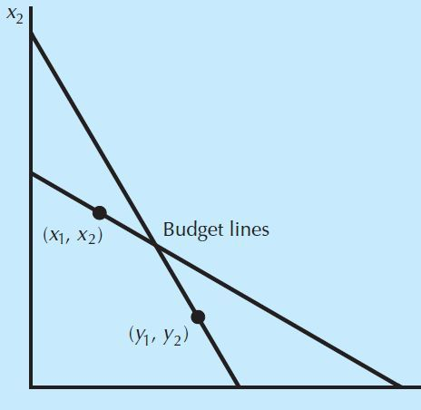

5. Consumer’s Choices: Revealed Preferences
Inferring preferences from choices: WARP, GARP, and the applications developed in the course.
Chapter 4 starts from assumptions about preferences. Here we observe which bundle the consumer buys and which other bundles were affordable. We use this information to infer a preference comparison. The price information matters: choosing one bundle tells us something about another only if that other bundle could have been chosen.
Let $(x_1,x_2)$ and $(y_1,y_2)$ be two bundles, and $(p_1,p_2)$ be the prices, such that:
We observe that the consumer has chosen to buy $(x_1,x_2)$.
What can you infer about this consumer’s preferences? The left-hand side is the cost of $X=(x_1,x_2)$; the right-hand side is the cost of $Y=(y_1,y_2)$. She bought $X$, and $Y$ costs no more than $X$ at these same prices. She therefore had enough money to buy $Y$ as well.
Assuming that she chooses her preferred affordable bundle, choosing $X$ tells us that:
If the consumer buys a bundle instead of another affordable one, then the first bundle is revealed preferred to the second.
Consider a different bundle $(y_1,y_2)$. Bundle $(x_1,x_2)$ is revealed preferred to $(y_1,y_2)$ iff:
The alternative $Y$ was affordable when $X$ was chosen. It may cost the same as $X$ or less. Both the observed choice and the cost comparison are needed.
Consider a different bundle $(y_1,y_2)$. Bundle $(x_1,x_2)$ is strictly revealed preferred to $(y_1,y_2)$ iff:
The alternative $Y$ was strictly cheaper when $X$ was chosen. Buying $Y$ would have left some of the amount spent on $X$ unspent. The strict sign refers to this cost difference.
The previous inference assumes that the consumer always chooses the most preferred bundle she can afford, i.e. maximizes her utility. We now compare choices under two different budgets.
What kind of observation would contradict this model? In the course graph, $(x_1,x_2)$ is chosen under one budget and $(y_1,y_2)$ under the other, although each alternative is affordable when the other is chosen. Under the unique-maximizer assumption used below, the two choices cannot both be optimal.

If a bundle $(x_1,x_2)$ is purchased at prices $(p_1,p_2)$,
and if a different bundle $(y_1,y_2)$ is purchased at prices $(q_1,q_2)$,
then if
i.e., $X^p\;\mathrm{RP}\;Y^p$,
it must not be the case that
i.e., $Y^q\;\mathrm{RP}\;X^q$.
Read the two observations separately. At prices $p$, $Y$ costs no more than the chosen $X$: the choice reveals $X$ over $Y$. At prices $q$, WARP rules out choosing $Y$ while $X$ is again affordable. The superscripts $p$ and $q$ identify the prices used for the comparison; they are not powers.
For the same two observed choices, if
it must be the case that
This is the same requirement written positively. Ruling out “greater than or equal to” leaves “strictly less than”. At prices $q$, buying $X$ must cost more than the amount spent on the chosen $Y$, so $X$ is outside that expenditure budget.
Starting point: Choices maximize the same strictly quasi-concave utility function on convex budget sets.
Goal: Show that these choices satisfy WARP. The proof follows the course notation $X^0,X^1$ and $p^0,p^1$: the superscripts identify the two observations.
We have just established one direction: the utility maximization considered above implies WARP. The course now asks about the reverse direction: is WARP enough to explain observed choices by utility maximization?
Under standard consumer-demand assumptions:
- Yes, if there are only two goods.
- No, not in general otherwise.
How must we strengthen WARP to obtain a theory of revealed preference that is equivalent to the theory of utility maximization? The next step in the course is to distinguish direct comparisons from comparisons obtained through a chain of choices.
Bundle $(x_1,x_2)$ is directly revealed preferred to a different bundle $(y_1,y_2)$ when $X$ is chosen and:
A single observation supplies the comparison: the consumer chooses $X$ while $Y$ is affordable at the same prices.
Consider three different bundles $X=(x_1,x_2)$, $Y=(y_1,y_2)$ and $Z=(z_1,z_2)$.
If $Y$ is directly revealed preferred to $Z$, and $X$ is directly revealed preferred to $Y$, then $X$ is indirectly revealed preferred to $Z$.
The intermediate bundle $Y$ connects the two observations. Each direct comparison uses the prices at which its chosen bundle was purchased.
For any sequence of bundles $\{x^1,\ldots,x^K\}$ chosen at prices $\{p^1,\ldots,p^K\}$, if
i.e., $x^1$ is (I)RP to $x^K$, then it must be the case that
Read the chain from first to last. At each observation, the next bundle was affordable when the current one was chosen. These links connect $x^1$ to $x^K$. GARP requires that the last observation must not strictly reverse that comparison.
In expenditure terms, $x^K$ is chosen at prices $p^K$. Saying that it is not strictly revealed preferred to $x^1$ means:
WARP considers direct revealed preferences. It checks the two choices against one another.
GARP considers both direct and indirect revealed preferences. It also follows comparisons through intermediate choices. With only two bundles, there is no additional intermediate bundle to consider. With more than two, a chain may reveal an inconsistency that direct pairwise comparisons miss.
The slides summarize this extension as “GARP ⇒ WARP”.
Starting point: Each $x^k$ maximizes the same locally non-satiated utility $u$ in its observed expenditure budget, with positive prices $p^k$.
Goal: Given a chain from $x^1$ to $x^K$, prove $p^K\cdot x^1\geq p^K\cdot x^K$.
- A finite dataset $D$ satisfies GARP.
- A finite dataset $D$ can be rationalized by a locally non-satiated utility function.
- A finite dataset $D$ can be rationalized by a continuous, concave, and strictly monotone utility function.
Since $110<125$, $B$ was strictly cheaper. Thus $A$ is strictly revealed preferred to $B$.
Next, the consumer chooses $B$ at prices $p_B=(14,12)$:
Since $130<136$, $A$ was strictly cheaper on this occasion. Hence $B$ is strictly revealed preferred to $A$. The cycle has strict comparisons, so GARP is violated.

The graph illustrates the two budget lines ($p_A$ in red, $p_B$ in yellow) and bundles $A$ and $B$, showing the revealed-preference cycle.

The graph illustrates the monetary cost associated with the revealed-preference inconsistency (dashed budget lines).

The higher the money-pump cost (wider gap between budget lines), the more severe the violation of rationality.
The money pump index measures the potential monetary loss associated with a violation of GARP. It expresses the cost of the inconsistency relative to the consumer’s expenditure.
Consider a sequence $x_1,x_2,\ldots,x_n$ of chosen bundles forming a revealed-preference cycle that violates GARP:
Here the subscript $k$ identifies an observation: $x_k$ is a complete chosen bundle, and $p_k$ is the corresponding vector of prices.
The money pump cost is:
We take $x_{n+1}=x_1$ to close the cycle. Each term compares the cost of the chosen bundle $x_k$ with the cost of the next bundle $x_{k+1}$, using the same prices $p_k$. The sum adds these expenditure differences around the cycle, just as the previous example added 15 and 6.
The money pump index normalizes this cost as a proportion of total expenditure:
The numerator is the potential loss; the denominator is the total amount spent over the observations. Dividing by expenditure tells us how large the loss is relative to spending.
The study uses household food consumption observed over time and also proposes a statistical test of consumers’ rationality.
- About 80% of households violate GARP at least once.
- The violations represent, on average, about 6% of household food expenditure.
Interpretation: A high proportion of households fail the binary test, but the monetary size of their violations is relatively small. The course therefore suggests that these observations could be consistent with rational behavior together with measurement errors. This is why measuring severity adds information to simply counting violations.
Question. People sometimes give resources to others. Can this non-selfish behavior be rational? In the course, rationality concerns the consistency of preferences and choices. A person can care about someone else’s payoff and still have a well-behaved preference ordering.
Experimental design. Participants allocate a budget between their own account and a stranger’s account. Write $\pi_o$ for their own payoff and $\pi_s$ for the stranger’s payoff. The price of one unit in their own account is 1; the price of one unit in the stranger’s account varies. Changing this price changes the payoff combinations they can afford.
What is measured? The number of WARP and GARP violations, and Afriat’s Critical Cost Efficiency Index (CCEI), introduced below.
Results. About 10% of participants violate WARP or GARP. Among the other 90%, the behavior of about half is consistent with the standard utility functions listed in the course:
- Selfish preferences:
$$u(\pi_s,\pi_o)=\pi_o.$$Only the person’s own payoff enters utility. Money given to the stranger does not increase this utility, so this specification describes keeping the resources for oneself.
- Leontief preferences — equal payoffs:
$$u(\pi_s,\pi_o)=\min\{\pi_s,\pi_o\}.$$Utility is determined by the smaller payoff. Increasing only the larger one does not raise the minimum. This explains the preference for an equal split of the payoffs.
- Perfect substitutes:
$$u(\pi_s,\pi_o)=\pi_s+\pi_o.$$A unit of either payoff contributes equally to utility. When giving costs less than 1 per unit, the same budget creates more total payoff in the stranger’s account; when it costs more than 1, it creates more in one’s own account. This explains the pattern of giving everything when giving is cheaper, and keeping the resources when one’s own payoff is cheaper.
Question. When a choice violates a rationality axiom, did the individual intend to depart from that axiom, or make a mistake? A violation is a mistake when the individual would not have made it had they known that they were violating the axiom.
Experimental design. The experiment proceeds in three stages:
- Present the axioms. Participants decide whether an algorithm following an axiom should govern their choices or whether they should choose on their own.
- Present the choice problems. All participants make choices, regardless of their first decision. Which choice is actually implemented depends on whether they selected the algorithm or their own decisions.
- Show the inconsistencies. Participants can change their choices, stop using the algorithm, or do neither.
Results. Around 85% initially want an axiom to guide choices on their behalf. When inconsistencies are shown:
- 47% resolve the inconsistency by changing their choices.
- 13% resolve it by stopping use of the axiom-based algorithm.
- 40% keep their choices and continue to let the algorithm choose.
Implication. The results support the interpretation that violations can be mistakes. This helps explain the distinction in the course between the normative appeal of an axiom and its descriptive accuracy: a person may want the axiom to guide their decisions even though their observed choices do not always satisfy it.
If a violation is intentional, the course suggests looking for other behavioral axioms that the individual agrees with. The question is then which principles the individual wants to follow.
Sample. The study includes 198 children aged 7 or 11 and 101 undergraduates aged around 21.
Experimental design. Children choose bundles of chips and juice in 11 choice sets, with choices repeated twice. The outcomes are the number of GARP violations and Afriat’s Critical Cost Efficiency Index.
The course describes CCEI as the largest fraction $\varepsilon\in[0,1]$ such that shrinking all observed budgets by this factor makes the revealed-preference comparisons consistent with GARP.
Intuition: With $\varepsilon<1$, fewer alternatives count as affordable in the test. Some comparisons responsible for a violation are therefore removed. The closer the required factor is to 1, the smaller the budget adjustment needed.
- CCEI = 1: The choices already satisfy GARP; no adjustment is needed.
- CCEI = 0.9: A budget adjustment of 10% is enough to make the comparisons consistent.
The index measures the adjustment to the affordability comparisons; the recorded choices themselves stay fixed.
Results. The proportions with zero GARP violations are about 25% at age 7, 60% at age 11, and 65% at age 21. CCEI is around 0.95 in all three age groups. Thus the number of individuals with violations differs substantially, while the violations remain relatively small according to the index.
Implications. By age 11, the consistency of children’s choices is close to that of the young adults in the sample. The course therefore considers it meaningful to use children’s decisions to infer preferences. The difference between ages 7 and 11 also suggests that cognitive development matters, motivating interest in cognitive training for decision-making skills.
Sample and design. The study uses 1,182 individuals from the CentERpanel of Dutch households. Participants choose allocations between two accounts in 25 decision problems under risk. Choice consistency is measured using CCEI.
Results. Lower consistency means leaving more potential earnings “on the table”. The reported gaps are:
- 3.3 percentage points for lower-income participants relative to higher-income participants.
- 2.6 percentage points for less-educated participants relative to more-educated participants.
- 5.1 percentage points for older participants relative to younger participants.
Implications discussed in the course. Consistency in the experiment is interpreted as reflecting decision-making ability relevant to real-world outcomes. The substantial differences across individuals motivate the discussion of soft paternalism: helping people make decisions while leaving them room to choose.